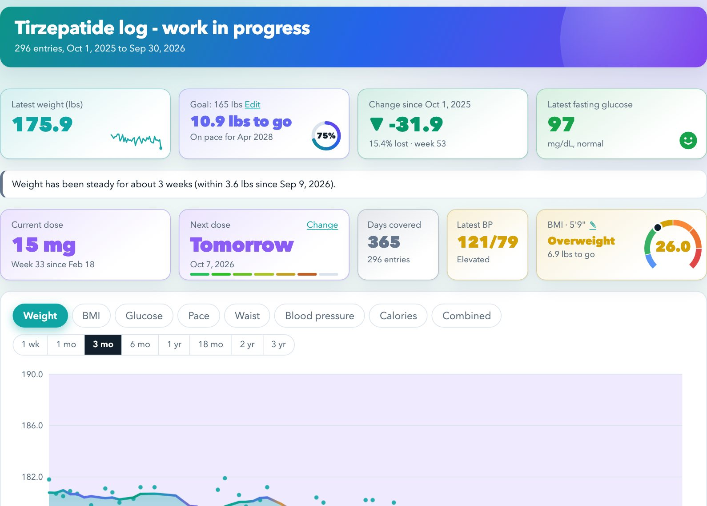
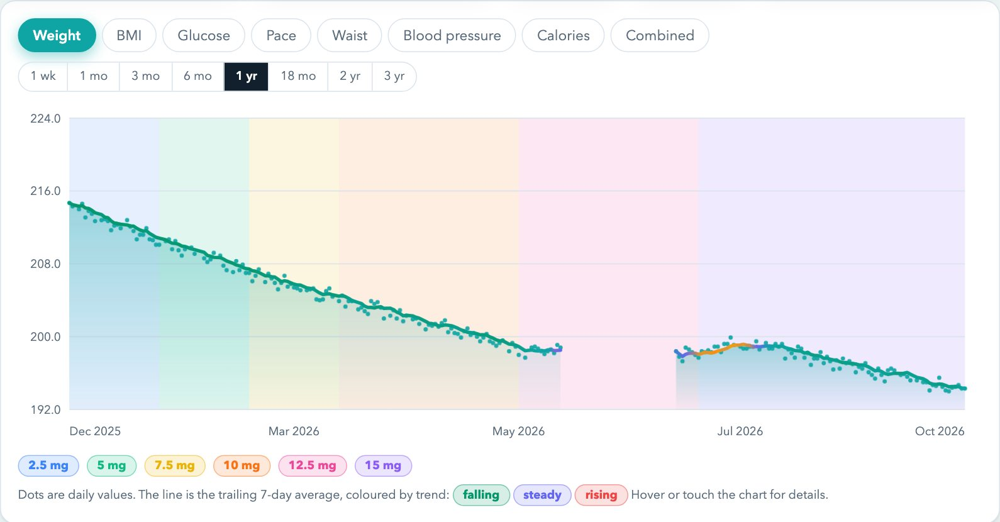
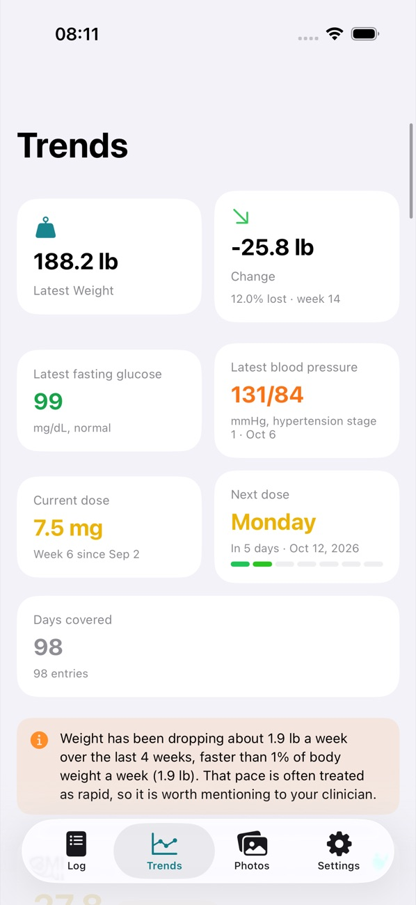
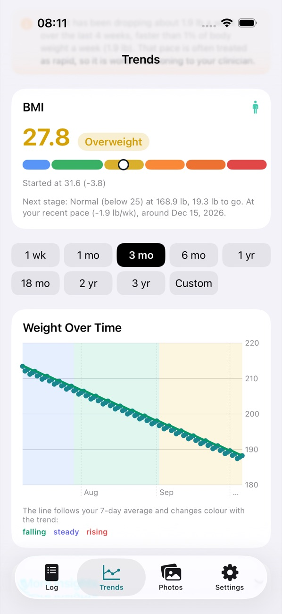
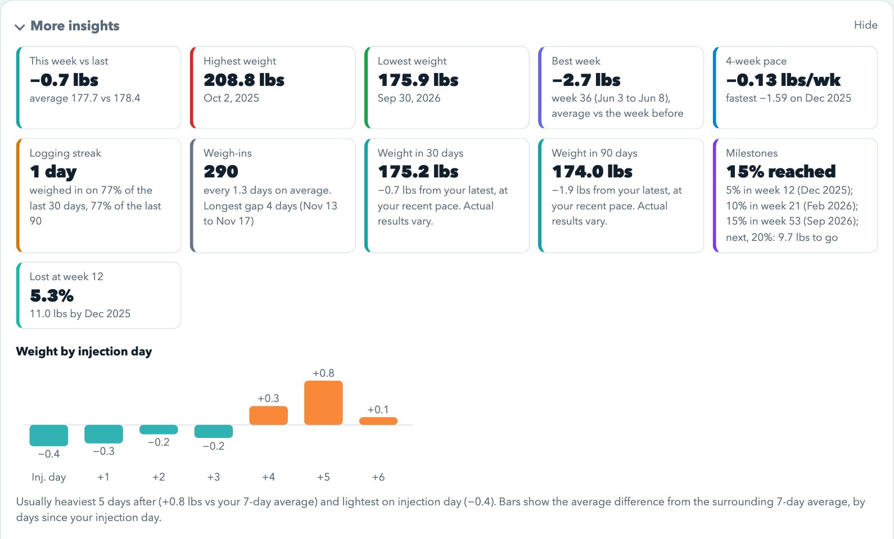

Private beta · invite only
Tirzepatide Log
Log your dose, weight, glucose and blood pressure, see where the trend is taking you, and show your doctor the whole picture. It's the same log on the web and on your iPhone.

Everything in one place
Dose, weight, calories and food notes, fasting glucose, blood pressure, waist, body fat and muscle mass, all logged by day.
Charts you can read
The weight chart has a 7-day average line that changes colour with your trend, with your dose changes shaded behind it. There are also charts for BMI, glucose, pace and blood pressure, and one that combines them. Look back anywhere from 1 week to 3 years.
See where you're headed
A goal projection, milestones from 5 to 25 percent, results by dose, and a heads-up if your weight plateaus or drops fast.
Web and iPhone, same log
Sign in on either and you see the same log. It keeps working offline and catches up when you're back online.

Try it first, no sign-in needed
The demo is filled with made-up data from nine months on treatment. Every chart, the insights, the entry form and the settings work, and nothing you do there is saved.


TirzTrack for iPhone
TirzTrack is the same log on your phone. Add a dose or a weigh-in in a few seconds, then check the Trends tab for weight with shaded dose bands, BMI, glucose, blood pressure and your next dose.
- Sign in once and the web and iPhone logs stay in step, even after time offline
- Pull down to sync, and set a weekly dose reminder
- Make a doctor link from your phone; your doctor doesn't need an account to open it
- Progress photos stay on your device
Share with your doctor in one click
Make a link and send it. Your doctor opens it in any browser, no account needed, and reads your log as a web page.
- Weight change, pace, milestones, glucose and blood pressure ranges, and charts by dose
- The link always shows your latest entries, and you can switch it off whenever you like
- Notes only go along if you include them

Privacy
- Invite only: accounts are created by invitation, so nobody can sign themselves up
- Your log is stored under a random account id, not your name, and your email is used only to sign in
- No ads and no third-party trackers
Tirzepatide Log is a personal tracking tool, not medical advice. Talk to your doctor about your treatment. The screenshots show sample data. A phoe.be project.
Tirzepatide log - work in progress
Start your log
Bring in an existing log or start fresh. Your data stays in this browser and is never uploaded.
Or add your first entry with the form below.
More insights
Results by dose
| Dose | Dates | Weeks | Weight (lbs) | Change | Per week |
|---|
Change is measured from the first to the last weigh-in at each dose.
Entries
| Date | Dose (mg) | Weight (lbs) | Change | Comments | Calories | Food notes | Glucose | BP | Waist (in) |
|---|